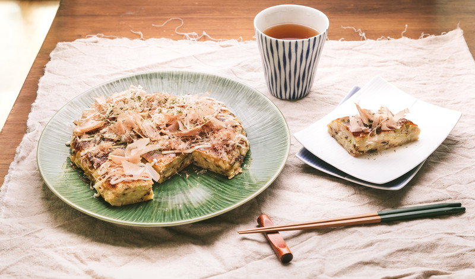
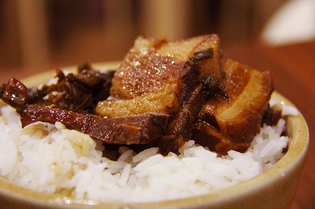
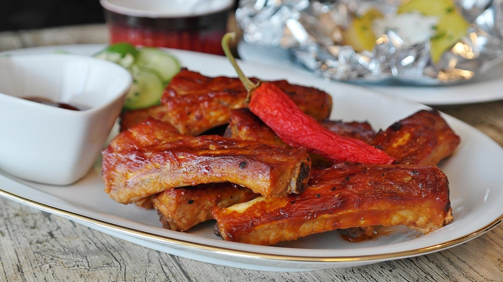

お好み焼き
簡単お好み焼きでお子様も笑顔に♪
キャベツ 豚バラ薄切り肉 卵 小麦粉 水

生姜焼き
生姜のいい香りが食欲をそそられます！
豚肉 生姜 醤油 酒 みりん

とんかつ
ちょっとした工夫で衣サクサク、美味しいとんかつ♪ポイントを抑えれば簡単です。
豚肉 卵 小麦粉 パン粉

うま辛豚丼
甘いタレが豚バラ肉にたっぷり絡んだ、美味しい豚丼のレシピです。タレがごはんに染みて最後まで美味しい一品です。
ごはん 豚肉 にんにく 醤油 みりん 酒 砂糖

絶品スペアリブ
思わずご飯がすすむ味付けです。食べすぎ注意！
骨付き豚肉 顆粒和風だし 蜂蜜 酢 砂糖

酢豚
お家で簡単本格的な酢豚ができます！
豚ロース 玉ねぎ 赤黄パプリカ 酢 片栗粉 ケチャップ